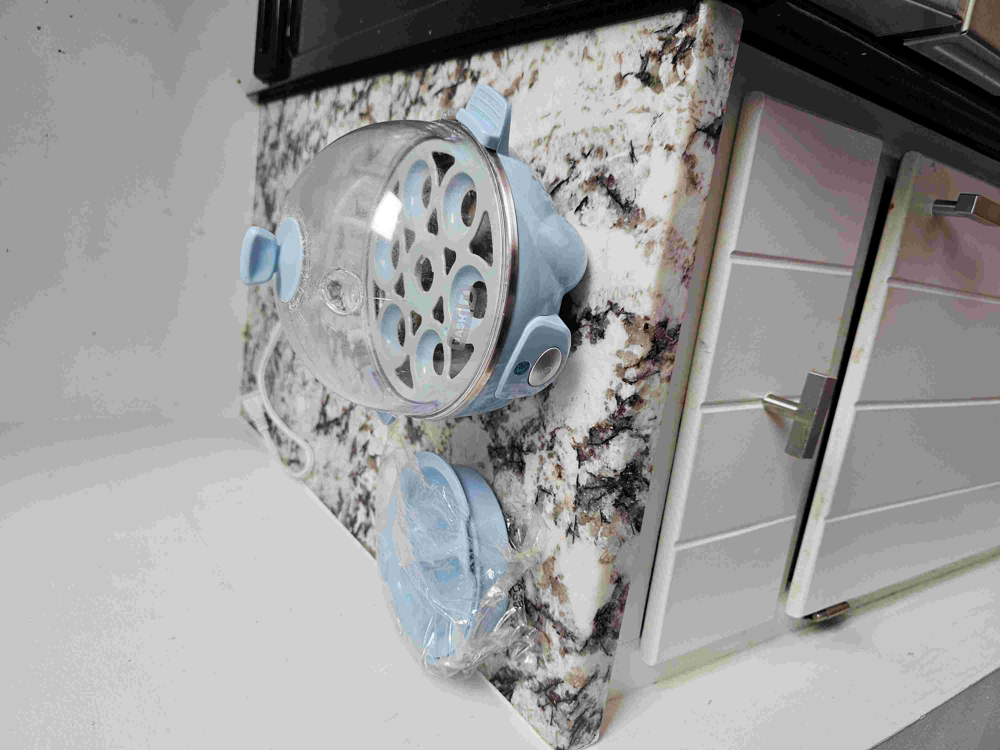
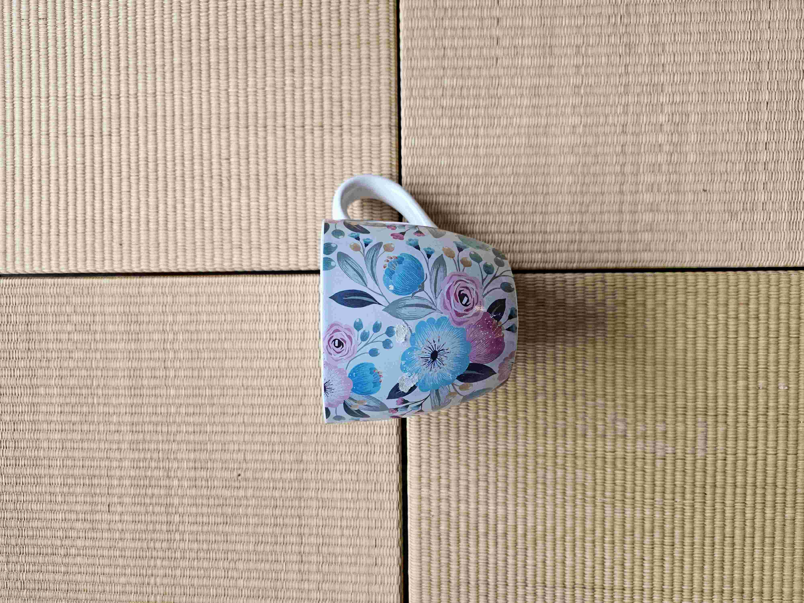
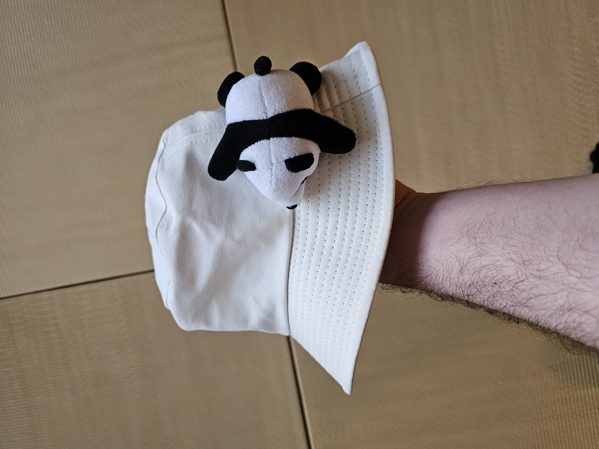
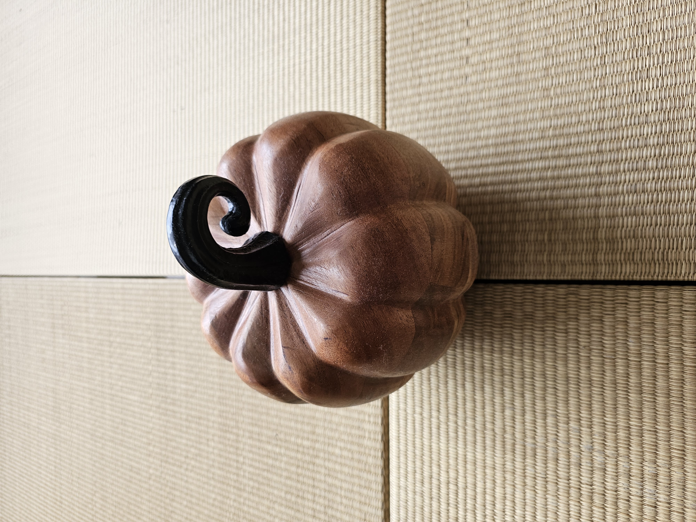

Bass Guitar with Case
Price: Make me an offer
Must take both the guitar and the case. Condition is good. It can hook up to an amp, but I've never tried, so no guarantees on if that works. A little buzzy, but it's a good starter instrument.

Daylight Alarm Clock
Price: Free!!!
One available, free to a good home. Like new. It's an alarm clock that can wake you up with sound, light, anything you could ever want! Great for if you want to gently wake up with a simulated sunrise and bird chirps without keeping your pesky phone in the bedroom to beguile you with instagrams and whatnot. Can support up to two alarms, has built-in sound presets, a battery backup for power outages, and an FM radio. Pretty sweet deal if you ask me.

Big Dumb Cup
Price: Free!!!
Is it big? Heck yes. Is it dumb? You betcha. Can it hold over a liter of water to keep you HYDRATED all day long? Yabsolutely. Insulated interior, and white plastic exterior. Dishwasher safe. Comes with a clear plastic lid. Lightly used.

Curble Chair
Price: Free!!!
Hey! You! Yes, you! Does your BACK hurt early and often? Then THIS may be the whichamacallit for you! This is an extra little seat that you can put onto any chair (or even the floor) and scooch on into it to support your lumbar. The weight of your legs torques the curble chair to put some pressure onto your lower back to help you stay held up. I used it as a floor chair for a little while and it worked pretty alright.

Easter Gnome
Price: Free!!!
TO PROTECT THE WORLD FROM DEVASTATION this gnome will sit on your lawn (potentially during an easter egg hunt) and ward away various evil spirits, oni, babadooks, and hobs. YMMV with botos encantados, selkies, and generally any other seductive, subaquatic shapeshifters. He's even got his own lil' egg. Eyes may or may not be included (the hat stays on).

Amazon Echo Dots (2)
Price: Free!!!
I don't need these ladies anymore, but they work just fine! They support Alexa+ or whatever if that's what you're into. They act as bluetooth speakers, help you with shopping lists, and can answer internet questions hands free. Nuff said.

Hard-boiled Egg Cooker
Price: Free!!!
We haven't been eating so many hard-boiled eggs lately, but if hard-boiled eggs are your jam, then this puppy may be your huckleberry. This can cook up to six hard-boiled eggs at once in a few minutes with the power of steam. It can also do other form factors of egg, but haven't tried those. This has gone through moderate use, but still works like a charm. Cleans up good as new with some vinegar.

Flower Mug
Price: Free!!!
It came to us as a flower pot, but it doesn't have a drainage hole, so you COULD just use it as a big ol' mug, which is what it looks like anyway. You could also drill a little drainage hole into it (probably) if you like yourself some drainage.

Folding Stools (2)
Price: Free!!!
These are outdoor camping stools that TACTICALLY deploy within SECONDS for those times when you need to pop a serious squat with great urgency. We haven't used these, so their condition is like new.

Food Tray
Price: Free!!!
You can do all sorts of stuff with this lightly used food tray! You can put food on it! You can do your nails on it! You can put food on it! The sky is really the limit here. The legs pop out and fold under the table for flat storage, making this premium flat treasure for your flat collection or for storage behind a little nook or cranny in your homestead.

Gillie Suit
Price: Free!!!
Only worn once as a halloween costume, and it comes pre-matted with dry October leaves and small twigs for authenticity! If you like to cosplay as a swamp monster, lie in wait during airsoft battles, or just become one with nature periodically, this is the suit of your dreams!

Katchete
Price: Free!!!
Dangerous deal! Adult pickup only! If a katana and a machete fell in love and shared a special hug, then the Cold Steel Katana Machete would be the result! Never used this, but maybe you will for chopping up cardboard boxes or hacking your way through the Amazon rainforest.

Tomahawk
Price: Free!!!
Dangerous deal! Adult pickup only! Gotta axe a question? Well, this is indeed an axe! It also has a spiky thing on the other end of it. Comes with sheath, but be careful! Did I poke my finger taking it out for this photo? Maybe.

Hand Sickle
Price: Free!!!
Dangerous deal! Adult pickup only! Not really sure about the practical applications of this one! But it is pointy and kinda spooky looking. Anyways, I don't need it, but maybe you do!

WARHAMMER!!!
Price: Free!!!
Dangerous deal! Adult pickup only! This one's a big ol' hammer, and it is indeed super fun! You can smash pumpkins with it after halloween and imagine you're raiding some sorta medieval castle. It also looks pretty darn cool. Cold steel brand. Lightly used against halloween hordes.

Wireless Keyboard and Mouse
Price: Free!!!
Pretty much what the title says! It's a wireless keyboard and mouse that connects to your computer via wireless USB A dongle. Battery powered. Batteries included, but they might be dead!

Lucifer Effect Book
Price: Free!!!
It's an evil book about evil stuff written by a man of dubious professional ethics! I bought it, started reading it, and then stopped because it was quite long with

Compressable Neck Pillow with Bag
Price: Free!!!
You can use this one to cushion your cervical spine on those long flights and car rides. Unless you're like me of course and can't really sleep on planes no matter what you try. This one is just lightly used, but works pretty good if you're vulnerable to the effects of sleep while traveling.

Owl Watering Stakes (5)
Price: Free!!!
If you enjoy flexible birds of prey and dislike watering your plants on a regular basis, then these owl watering stakes might be just what you need! You just kinda dig a little hole, plug 'em into the dirt near your plant, and put an upside-down bottle filled with water into the top, and the clay will slowly wick water out into the soil to nourish your plant babies. I've got a few of them in various colors, and THEY CAN ALL BE YOURS.

Panda Bear Bucket Hat
Price: Free!!!
Can you say panda bear bucket hat? Okay, you probably can. This was special merch from panda fest. I bought it because I forgot my hat at home, and thought this would do the trick. Unfortunately I still got sunburned because it was QUITE sunny, and this doesn't QUITE cover all of your neck regions. So would still recommend sunblock with this one, but it is fashionable if you like pandas, bears, or just hats generally speaking.

3D Printed Pokemon Planter
Price: Free!!!
Honestly, I forget which pokemon this is, but it is a coolio 3D printed planter! If you like pokemon, maybe it'd be fun for you to sand this a little and paint it blue (I know the pokemon is supposed to be blue okay). It has a drainage hole, a few little pucks to sit on top of, and a decorative base for catching the water runoff. Made with love by my dad, but not necessarily for me, but maybe now for you if you would love it!

Butt fan?
Price: Free!!!
I can't really remember what possessed me to buy this, and I'm not really sure what to call it. What it IS is an apparatus that you plug into your car's cigarette lighter, affix to your car seat, and relax as it blows cool air onto your bum and back to help you beat the Atlanta heat during those long commutes. I do not drive all that much though, so it's not much use to me, but if you do then maybe this is for you!

Rustic Pompompurin Bath Mat
Price: Free!!!
It's a bath mat we made during a birthday party of the man himself, Pompompurin. If you're a true fan, you know.

Tiny Gardening Tools
Price: Free!!!
Do you have a tiny garden? Maybe some tiny trees? Or some tiny fields? Do they yield tiny vegetables or tiny fruits? Well, if you have a tiny farm op going on all stardew valley style, then you NEED these tiny gardening tools. Act now!

Small Toolbag
Price: Free!!!
Do you have a humble number of tools that you need to tote from place to place? Then tote in your stretched-out shirt front no longer and tote like a pro with this tiny toolbag!

Tumblers (2)
Price: Free!!!
I'm not sure exactly what they tumble, but that sure is what these things are called! Great for smoothies, shakes, and the like. Very lightly used and dishwasher safe!

Shark Vacmop
Price: Free!!!
Is it a vacuum? Is it a mop? I'm really not sure, but it claims to do both! So if you act fast, this bad boy can be yours, and you might be able to vacuum and/or mop! I think it's cordless, and we've got the charger somewhere around here.

Wooden Decorative Pumpkin
Price: Free!!!
It's a wooden pumpkin for natural fall vibes. You can put it on a table. You can put it on a chair. You can put it on your head right on top your hair. Maybe those last two are a little silly, but it looks pretty nifty as a little centerpiece. We just live in a one bedroom, so don't have a ton of space for seasonal decor.